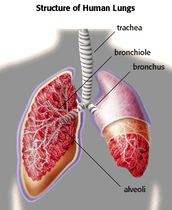

Lung Toxicology Problem Set
Problem 1: Lung Anatomy
For help to answer the question:
Which of the following is NOT found in the human lung?
A. bronchiole B. trachea C. bronchi D. alveoli
Tutorial
|
The lungs are located in the chest in the pleural cavity. When you inhale, air travels to the lungs beginning in the nose and mouth, then down the throat to the larynx, where the respiratory system branches off from the esophagus. From the larynx, the air goes down the trachea until it divides to go to each lung. At the point of division the air passages are called the bronchi. Each bronchus divides into smaller and smaller branches, branching 20-30 times, and becoming the bronchioles that take the air to the different areas of the lung.
|
 |
| Eventually the air reaches a cluster of "blind sacs" called alveoli, where the actual gas exchange occurs. An adult human can have up to 300 million alveoli in his or her lungs. |


The Biology Project
The University of Arizona
Tuesday, October 14, 1997
Contact the Development Team
http://biology.arizona.edu
All contents copyright © 1997. All rights reserved.